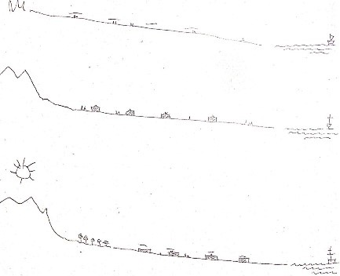
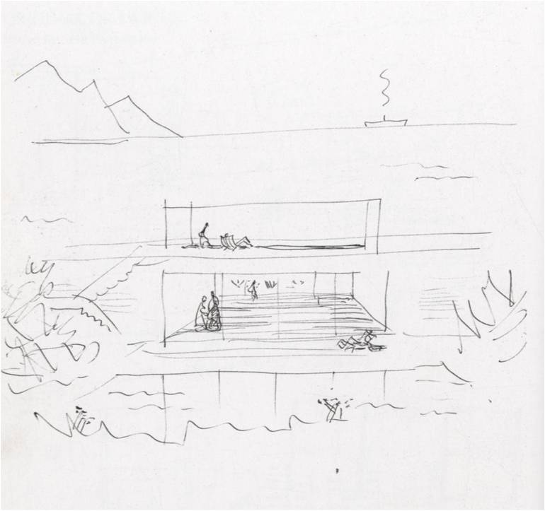
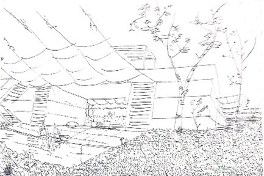
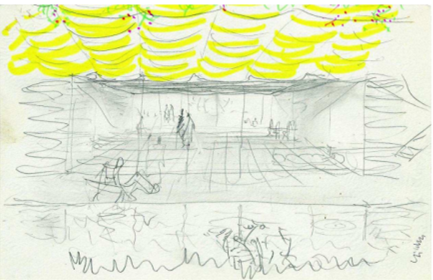
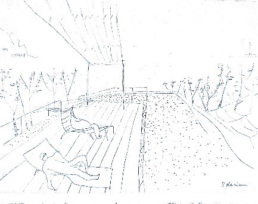

Alejandro de la Sota
Paisaje. Vida. Descanso. Intimidad. Transparencia. Ligereza.
La casa en la naturaleza
“Si el hombre se encierra en su propia casa consigue todo, pero pierde naturaleza” (Sota, 1984).
Alejandro de la Sota pertenecía a la generación de posguerra de 1940, formada por Cabrero, Fisac, Coderch, Moragas, Fernández del Amo y Sostre, entre otros, que recibieron el título en torno a ese año y presentan cierta homogeneidad de estilo debido a las condiciones sociales y políticas del momento. El Gobierno Civil de Tarragona y el Gimnasio Maravillas de Madrid son dos de sus edificios más representativos. En 1975 gana el Premio Nacional de Arquitectura por el aulario de la Universidad de Sevilla. Falleció en Madrid en 1996. Es considerado como uno de los grandes maestros de la arquitectura española del siglo XX.
Alejandro de la Sota -en colaboración con Mauricio Sánchez-Bella- desarrolla el proyecto de Urbanización en Alcudia entre 1983 y 1984.
El proyecto se ubica en la Bahía de Alcudia (Mallorca). Se trata de la construcción de una urbanización turística con 50 viviendas unifamiliares y varios equipamientos comunes. Poco después del encargo, el cliente cambia de arquitecto. Pese a esto, Alejandro de La Sota no abandona la búsqueda de un prototipo generalizable. De las 50 viviendas solamente se construyó un prototipo en bloque de hormigón, pero la construcción se alejará bastante de la idea original, careciendo incluso de las tapias de piedra que se planteaban en el proyecto. Actualmente, el terreno se encuentra ocupado por viviendas unifamiliares dispersas y gran parte de las parcelas de la urbanización siguen sin ocuparse.
Alejandro de la Sota se apropia del lugar mediante las tapias de piedra que pertenecen al paisaje característico de Mallorca, sirven para separar las propiedades y coser la propuesta al lugar. Plantea un recinto en el que situar la vivienda. Además, la vivienda se camufla en su entorno a través del material. La intimidad se consigue proyectando una casa patio. Propone el espacio más público de la casa como una pieza abierta que se prolonga hacia el perímetro por medio de emparrados y toldos.
Sección. Atrapar el horizonte.
Además de coser con el lugar, le interesa eliminar cualquier límite visual que impida al lugar ser arquitectura y a la arquitectura ser lugar. Quiere atrapar las vistas lejanas desde la vivienda. Las viviendas se disponen en pendiente, en dirección al mar. En sus bocetos representa distintas ideas. Tantea con las cubiertas, colocando grandes sombreros para dar sombra y poder disfrutar de las vistas, colocando cubiertas a doble agua, pero esta opción dificultaría las vistas. Finalmente, dibuja esas casas con cubierta plana y colocando sobre ellas toldos se consiguen las vistas a la playa y una terraza con sombra. De esta manera se produce un escalonamiento del proyecto.
Como en otros trabajos del arquitecto, el proyecto es un proceso abierto sin resultados definitivos. Lo significativo en las casas de Alcudia no es solo la solución constructiva, o las relaciones de intimidad y apertura que plantea con lo cercano y lo lejano. No propone una “arquitectura de autor”, se presenta como una solución de casa de vacaciones, casa en la que lo significativo será la vida en ella, una vida al aire libre en la que tiene más importancia el contacto con la naturaleza, el poder disfrutar de lo que hay alrededor. Los bocetos realizados por el propio de la Sota, como variación de una serie, presentan esta idea: la de una vivienda repleta de actividades relacionadas con el ocio y el descanso, en la que es difícil separar la arquitectura de los habitantes.
Naturaleza. Paisaje marítimo.
De la Sota en sus primeros bocetos refleja una arquitectura blanca, no quiere ser nada, quiere ser un fondo para la vida. La vida la representa dibujando las montañas y un barco con humo al fondo, el mar como gran protagonista, la vegetación en primer plano y, por último, la vida dentro de la casa. Muestra una caja neutra con una parte más íntima inferior y otra parte superior dominante que disfruta de las vistas del mar. Es bonito imaginar la vida en esa casa con estos sencillos detalles. Es una arquitectura neutra que no necesita materialidad ni textura para mostrar la vida dentro de ella. Esto viene dado por la propia naturaleza. Tiene la voluntad de vivir en medio del paisaje.
Vegetación.
Toldos y emparrados.
-
Nuevamente dibuja una arquitectura blanca donde el mayor detalle lo dedica a los árboles y sus hojas, el suelo lleno de vegetación, las personas descansando en la butaca junto a la piscina, los elementos del día a día que ocupan esa arquitectura que es simplemente un fondo neutro que permanece abierto donde uno puede entrar a completar.
También representa unos toldos y enredaderas que servirán para separar esas dos partes diferenciadas que a la vez se relacionan. La lógica entre la casa que mira y la casa ensimismada. En la planta baja se produce una relación horizontal cercana e íntima entre exterior e interior; en la planta alta una relación horizontal entre azotea y paisaje lejano y amplio. Alejandro de la Sota propone la continuidad visual, funcional y espacial entre el estar y el jardín. Lo importante es tener un trozo de terreno y a la vez disfrutar la posibilidad de mirar lejos. El interior y el exterior se funden en uno.
Solarium. Descanso.
Dibuja unas escaleras en el patio exterior que conducen a la parte superior. Esta parte se dibuja tímidamente, como si no hubiera más que un leve umbráculo que proporciona sombra y en el que ningún cerramiento impida disfrutar de las vistas al mar y a las montañas. Este espacio lo llama “solárium”, lugar expuesto al sol. Es un elemento para dominar. También vuelve a representar el descanso y disfrute de las personas tumbadas en las butacas, las gafas de sol, la vida en esa arquitectura transparente. Quiere que sea ligero y él propone hacer el umbráculo en chapa para que coja un cierto reflejo del ambiente y desaparezca entre la naturaleza. “Ver el mar desde todas las casas: tener vida íntima en todas ellas. Se pensó en una casa abierta, convirtiendo la parcela, el jardín, en auténtica casa, debajo de buganvillas y enredaderas… sobre ellas el mirador solárium.” (Sota 1983).
Es una arquitectura de espacios relacionados con la actividad y el descanso que se ven reflejados en la playa, el patio-jardín y el interior de la vivienda. Propone una manera de vivir, no un objeto, ni forma, ni material. Eso pasa muy a segundo plano.
Propone situaciones. Los bocetos que Alejandro de la Sota dibuja nos ofrecen una vida relajada, dedicada al disfrute, en contacto con la naturaleza. Sin tener la imagen formal exacta de las medidas de la vivienda uno ya se imagina que esa casa es agradable, algo que no pasaría con la propuesta de una arquitectura más estética y personal, se percibiría con más subjetividad.
“…me gustó siempre hablar de arquitectura como divertimento; si no se hace alegremente no es arquitectura. Esta alegría es, precisamente, la arquitectura, la satisfacción que se siente. La emoción de la arquitectura hace sonreír, da risa. La vida no.”(Sota, 1989)
Relacionando esta cita con las viviendas en Alcudia, imaginamos a un Sota con libertad de hacer el proyecto suyo, sin restricciones ni presiones (ya que fue rechazado por el cliente) y disfrutando de hacer de la arquitectura una forma de vivir alegre y relajada, donde solo requiere de un lienzo en blanco y la naturaleza que le rodea. La arquitectura no es un objeto, sino que es una cosa liviana en la naturaleza como fondo para la vida. Esta arquitectura permanece abierta, se retira y se vuelve casi opaca para dejar paso a la vida.
BIBLIOGRAFÍA
Fundación Alejandro de La Sota. Recuperado 8 de mayo de 2021, de www.alejandrodelasota.org
MARTÍNEZ, Carmen y PEMJEN, Rodrigo. Alejandro de la Sota. Cuatro agrupaciones de vivienda: Mar Menor, Santander, Calle Velázquez, Alcudia. Colegio Oficial de Arquitectos de Castilla-La Mancha/ Demarcación de Toledo, 2007.
MILLÁN, Pablo Manuel (s. f.). Más allá de la arquitectura y el límite. De Alcudia (Mallorca) a Las Negras (Almería). Recuperado 8 de mayo de 2021, de https://idus.us.es